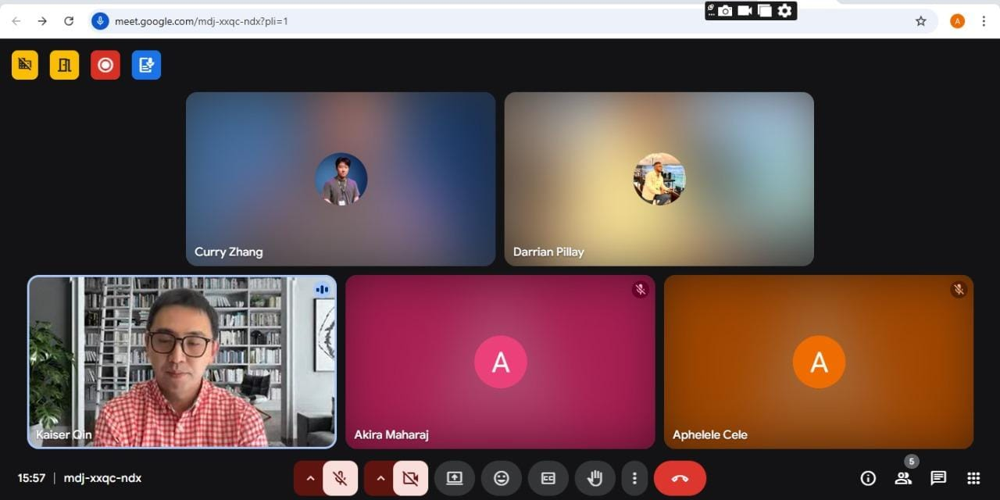

Interests
I'm venturing into business analysis- deducing real problems, engaging the people who live with them, and designing solutions that stick. Everything below feeds into that, from the technologies I follow to the people I mentor.
Turning problems into solutions
What draws me to business analysis is the process itself: identifying a real problem, breaking it down, and finding a workable path to solve it. I enjoy engaging with stakeholders, running presentations, and communicating findings clearly, the parts of BA work that turn technical detail into decisions people can act on.
I'm building toward this through requirements gathering, process mapping, stakeholder engagement, and translating business needs into technical specifications- skills I've practised through Tech Society leadership and team projects like DriveSync.
Where I like to keep exploring
Artificial Intelligence
Following how AI is applied across industries - including through the MIT AI+X BlendED programme.
Data Analytics & BI
Turning raw data into insight that supports real decisions.
Cybersecurity
Understanding how systems — and the people who use them - stay protected.
Software Development
Building and shipping applications, from concept through to a working product.
Vodcast
Alongside the analysis and the code, I like getting in front of a camera and talking through ideas out loud. Here's a short episode — my voice, unscripted, on topics I care about.
MIT AI+X BlendED Programme
As part of Tech Society, I had the opportunity to engage and work with the MIT AI+X BlendED programme, run in collaboration with partners in China. It gave me exposure to how AI is being applied and taught across borders, and it's shaped how I think about combining global perspectives with local, practical solutions here at the University of KwaZulu-Natal.

Giving back through teaching
-
Mentor & Tutor-2024-2025UKZN Residence Life
-
Supplemental Instruction Leader-2026MGNT2SM
-
IT Demonstrator-2026ISTN101
Always adding to the toolkit
I believe strongly in the importance of education and continuous learning through collaboration, networking, and hands-on practice. I have been a leader and managed 6+ projects and also members, and that alone has taught me a lot about leadership, teamwork, and problem-solving. I also enjoy exploring new technologies and staying up to date with industry trends,cause we may never know what is next.